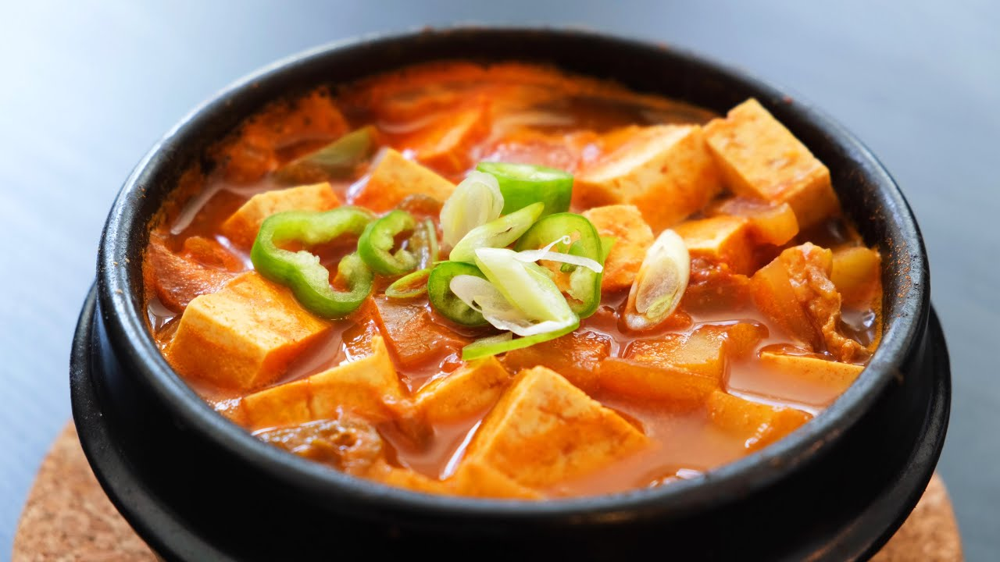

Soybean Stew Recipe

A Korean comfort stew dish
This is a Korean stew made with soybean paste and veggies.
Ingredients
- 4 ounces any cuts of beef (or ground beef), cut very thinly
- 2 teaspoons vegetable oil
- 2 garlic cloves, minced
- 4 ounces potato, peeled and cut into ½-inch dice
- 4 ounces onion, cut into ½-inch dice
- 4 ounces zucchini, cut into ½-inch dice
- ¼ cup doenjang (Korean fermented soybean paste)
- 4 ounces medium-firm tofu, cut into ½-inch pieces
- 1 green chili pepper or jalapeño, sliced
- 1 green onion, sliced
- 1 teaspoon gochu-garu (Korean hot pepper flakes; optional)
Cooking Directions
-
Place a heavy, medium sized pot over medium heat. When it is hot, add
the vegetable oil, beef, and garlic. Cook, stirring, for a few minutes,
until the beef is no longer pink. Add 2 cups water.
-
Cover and cook for 10 minutes over medium heat. If it begins to boil
over, crack the lid.
- Add the potato, onion, zucchini, and doenjang.
-
Cover and cook for another 10 minutes. Stir the stew to make sure that
the soybean paste is evenly incorporated.
-
Add the tofu, green chili pepper, green onion, and gochu-garu (if used).
-
Cover and cook for about 5 minutes, until the tofu softens and the stew
is bubbling. Serve right away with rice, kimchi, and more side dishes.
-
You can refrigerate the stew for up to 3 days. When you want to have
some, reheat gently on top of the stove.